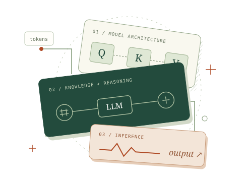

知識筆記
RETRIEVE. REASON. REMEMBER.
把理解，變成直覺。
每回合最多 10 題，選項隨機排列。作答後立即看解析；答錯的觀念會留在複習區，陪你再練一次。
錯題複習
錯題是一張學習地圖。重新回答這些題目，答對後就會自動移出。
從第一個 Attention 到完整的 AI 系統。用圖解拆解觀念，用練習串起理解，一次掌握一個關鍵概念。

四個章節，從理解模型到打造系統。選擇一站，開始探索。
每回合最多 10 題，選項隨機排列。作答後立即看解析；答錯的觀念會留在複習區，陪你再練一次。
錯題是一張學習地圖。重新回答這些題目，答對後就會自動移出。
下載備份可離線保存（含每筆紀錄的時間）；從檔案還原會覆蓋此瀏覽器的學習進度。登入 Google 後，進度會在你的各裝置間自動同步。
載入 Firebase 設定中…